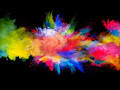

Balta spalva asocijuojasi su švara, tyrumu ir grynumu. Ji padeda įveikti slogią nuotaiką ir susikaustymą, stiprina imunitetą.
Raudona spalva gali padėti tiems, kuriuos kamuoja raumenų ar sąnarių skausmai. Be to, ši spalva – tai jausmingumo ir aistros simbolis, akivaizdžiai rodantis, kad esate pasiruošę užmegzti naujus santykius.
Rožinė spalva normalizuoja virškinimą, padeda ištverti sielvartą ir gyvenimo negandas. Tai komforto spalva, padedanti susitvardyti kritinėse situacijose.
Oranžinė spalva suteikia žvalumo saugumo, gyvenimo džiaugsmo pojūtį, turi teigiamą poveikį virškinimo sistemai, padeda sergantiems astma ir bronchitu. Jeigu nemėgstate oranžinės spalvos, tai rodo, kad bijote judėti į priekį.
Žalia spalva – tai gamta, atgimimas ir ramybė. Žalia spalva mažina galvos skausmą ir gydo tulžies akmenligę, suteikia pasitikėjimo savimi. Tai labiausiai raminanti spalva, todėl labai tinka nerimo kamuojamiems žmonėms.
Mėlyna spalva simbolizuoja viltį, ištikimybę, konservatyvumą. Tai puikus antiseptikas ir geriausias vaistas nuo nemigos. Mėlyna spalva padeda užsimiršti, suteikia pusiausvyros ir harmonijos, padeda atsikratyti žalingų įpročių.
Geltona spalva suteikia laimės ir džiaugsmo, teigiamai veikia į depresiją linkusius žmones. Naudinga kepenims ir kitiems virškinimo organams, padeda kovoti su celiulitu, atsikratyti niūrių minčių bei kelia savivertę.
Violetinė spalva yra efektyvi esant bet kokio pobūdžio uždegimams, padeda sumažinti širdies ritmą. Ši spalva turėtų būti naudojama kartu su kitomis spalvomis, nes jos perteklius gali sukelti depresiją. Taip pat nerekomenduojama šia spalva dažyti vaikų kambario.
Juoda spalva – paslapties ir neprieinamumo spalva, dažniausiai asocijuojasi su gedulu ir depresija. Juodą renkasi tie žmonės, kurie nori užsidaryti savyje ir „pasislėpti“ nuo išorinio pasaulio.
